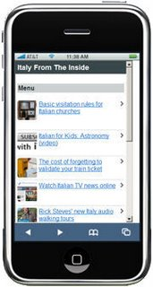

Looking for an easy way to view our hot Italian culture tips right on your mobile device? Well, just point your smartphone browser to our web site http://www.italyfromtheinside.com. Our blog is now mobile ready and accessible from any smartphone, including the cool iPhone.